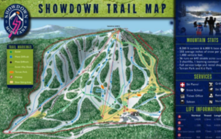

Bridger Bowl is an alpine ski area in the western United States, near Bozeman, Montana. It serves the local population of Gallatin County, including Montana State University. The summit elevation is 8,700 feet above sea level, with a vertical drop of 2,600 feet on east-facing slopes.
Bridger Bowl is an alpine ski area in the western United States, near Bozeman, Montana. It serves the local population of Gallatin County, including Montana State University. The summit elevation is 8,700 feet above sea level, with a vertical drop of 2,600 feet on east-facing slopes. Located sixteen miles (26 km) north of Bozeman in the Bridger Range of southern Montana, Bridger Bowl is a locally owned non-profit ski area. It provides locals with affordable skiing, great terrain, and outstanding snowfall. The ski area and mountain range are named after the noted mountain man Jim Bridger, and are accessed from state highway 86.
In addition to the existing base lodge and a mid-mountain lodge, a new main lodge opened in 2005 at the base area.

Showdown is an alpine ski area located in the Little Belt Mountains in Central Montana, United States. Created in 1936 and originally called King's Hill Ski Area, Showdown is a small-scale ski area that is often closed on Mondays and Tuesdays, receiving most patrons on the weekends during the season.